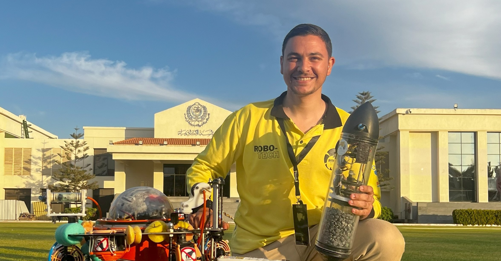

Mechanical Design Engineer | SolidWorks | ANSYS FEA | ROV Systems
Undergraduate mechanical engineering student with hands-on experience in ROV systems, mechanical design, sheet metal structures, and finite element analysis. Passionate about transforming concepts into manufacturable, validated designs.
SolidWorks assembly, DFA principles, and ANSYS structural validation.